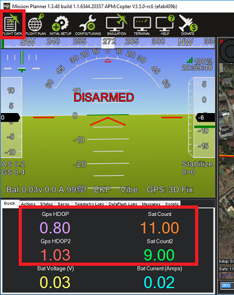
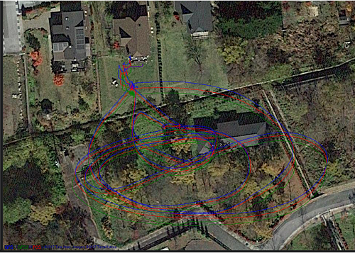

GPS Blending (aka Dual GPS)¶
GPS Blending combines the readings from two gpses. Using two GPSes reduces the chance of glitches affecting the vehicle.

Only GPSs that report position and speed accuracy can be used for blending. All UBlox GPSs provide this extra information while GPSs using the NMEA protocol generally do not.
Normally blending should be done with two GPSs from the same manufacturer because the scaling of the accuracy numbers varies and will lead to favouring one GPS over the other.
Setup through the Ground Station¶
SERIAL4_PROTOCOL = 5 / “GPS”. Alternatively telemetry port 1 or 2 can be used by setting SERIAL1_PROTOCOL or SERIAL2_PROTOCOL to 5.
GPS_TYPE2 = 1 / “AUTO” or the specific number corresponding to the type of GPS
GPS_AUTO_SWITCH = 2 / “Blend”. Alternatively set to 1 / “UseBest” to only use the better GPS. The better GPS is decided based on the GPS’s self reported accuracy.
After rebooting the board, the status, hdop and satellite count of both GPSs should be visible.
{kind=link}
Dataflash logging¶
The first GPS’s data appears with an instance number of 0 in the GPS and GPA messages. (ie GPS[0].x, GPA[0].x messages) The second GPS’s data appears with an instance number of 1 in the GPS and GPA messages. The blended GPS data appears with an instance number of 2 in the GPS and GPA messages.
If using the Mission Planner, opening a dataflash log and clicking on “Show Map” will show both GPSs, the blended position and the EKF’s final estimate (shown as “POS”)
{kind=link}
Video¶
Video of a heavily loaded IRIS using Blended GPS, optical flow and a lidar range finder